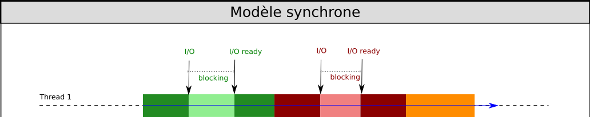
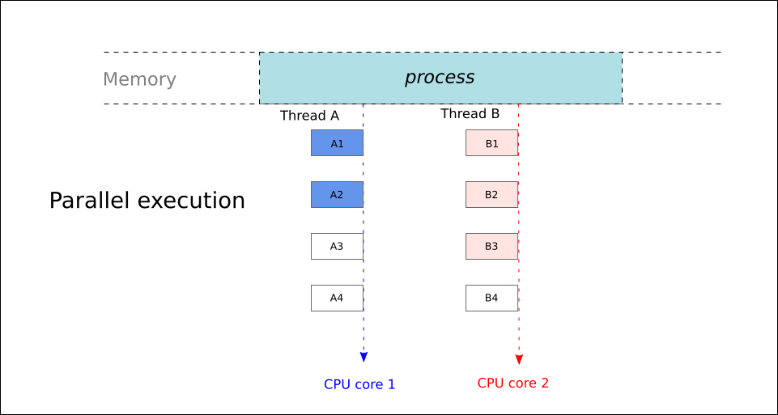
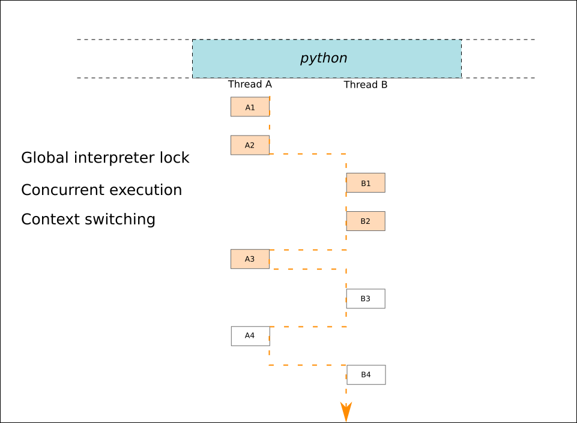
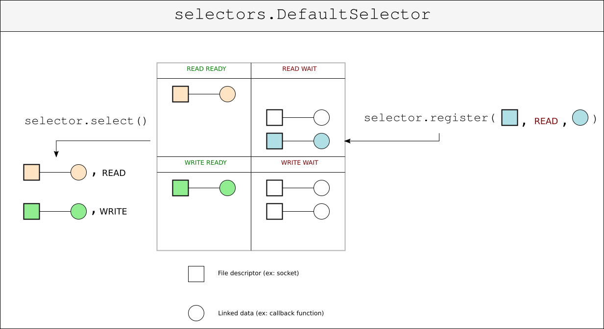

def fib(n): """Compute n-th Fibonacci number""" if n <= 1: return n else: return fib(n-1) + fib(n-2)
Pour BRO
(defun fib (n) "Compute n-th Fibonacci number iteratively" (defun fib-iter (a b n) (if (= n 0) a (fib-iter b (+ b a) (- n 1)))) (fib-iter 0 1 n)) (fib 10) ;; returns 55
La fermeture de la connexion est à l'initiative du client.
Code : fibservsync.py
Client rapide
Client lent
Idée : Utiliser différentes combinaisons de ces clients pour évaluer les performances du serveur
Code
fibclientslow.pyfibclientfast.py
"Fils d'exécution" indépendants, partageant les ressources du processus auxquels ils appartiennent.

Idée : le serveur peut créer un thread pour s'occuper de chaque nouveau client qui se connecte.
def run_server(host='127.0.0.1', port=5000): s = socket.socket() # ... s.listen(5) while True: conn, addr = s.accept() # Block until a connexion comes in print('Connection from {}.'.format(addr)) # Handle client in a separate thread, # and go back to accepting incoming connexions Thread(target=handle_client, args=(conn,)).start()
De manière générale
Limitations propres à Python

Idée : demander régulièrement au système d'exploitation quelles sont les sockets qui sont prêtes

yield pour suspendre la coroutine
yield from
def simple_coroutine(): print('Step 1') yield print('Step 2') yield return 'Done' def countdown(n): print('Counting down from', n) while n > 0: yield n n -= 1 return 'Done counting.' def countdown_twice(n): yield from countdown(n) yield from countdown(n) return 'Done counting twice'
def run_until_complete(tasks): while tasks: # Fetch next task from the beginning of the queue coro = tasks.popleft() try: # Advance task one step, until next 'yield' next(coro) except StopIteration as exc: # The task finished, and its return value is # retrieved from the exception. print('Scheduler: task returned', exc.value) continue else: # Put the task back at the end of the queue tasks.append(coro)
La boucle événementielle (event loop) :
Objet rendu disponible immédiatement, et destiné à recueillir un résultat futur
from concurrent.futures import Future from time import sleep f = Future() def execute_when_done(f): print('Result available :', f.result()) f.add_done_callback(execute_when_done) sleep(3) # Computation goes on... f.set_result(1) # Result available: 1
Une implémentation simplifiée
class Future: _result = None _STATE = 'PENDING' def __init__(self): self._callbacks = [] def result(self): if self._STATE != _FINISHED: raise InvalidStateError('Result is not ready.') else: return self._result def add_done_callback(self, fn): if self._STATE == 'FINISHED': fn(self) else: self._callbacks.append(fn) def set_result(self, result): self._STATE = _FINISHED self._result = result # Run callbacks for callback in self._callbacks: callback(self)
selector = DefaultSelector() selector.register(socket, EVENT_READ, callback) selector.unregister(socket)
Becomes…
loop = asyncio.get_event_loop()
loop.add_reader(s, callback, socket)
loop.remove_reader(socket)
yield EVENT_READ, s conn, addr = s.accept() new_task = handle_client(conn) tasks.append(new_task)
Mutatis mutandis…
conn, addr = yield from loop.sock_accept(s) loop.create_task(handle_client(conn, addr))
yield EVENT_READ, socket data = socket.read(256)
Mutatis mutandis…
data = yield from loop.sock_recv(socket, 256)
tasks.append(start_server()) loop()
Mutatis mutandis…
loop.create_task(start_server()) loop.run_forever()
future = pool.submit(fib, n) yield 'future', future result = future.result()
Mutatis mutandis…
result = yield from loop.run_in_executor(pool, fib, n)
def handle_client(reader, writer): while True: data = yield from reader.read(256) # etc... server_coro = asyncio.start_server(handle_client, host='127.0.0.1', port=5000) loop.create_task(server_coro) loop.run_forever()
{kind=link}